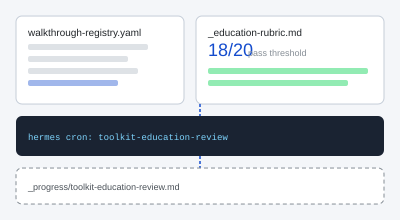

Starter row for step 1; edit slug and artefacts before merge.
Toolkits / Measure
Walkthrough
Self-improving toolkit content
If you publish walkthrough pages on your site: keep them current with a registry allow-list, a scoring rubric, optional scheduled review, and a verdict log - curate learnings, don’t invent new kits.
Prerequisites: Registry row drafted, Hermes optional, ~20 min read.
After this walkthrough
You can add a walkthrough to your registry, score pages with your education rubric, and optionally wire a scheduled agent job that patches gaps until all published pages pass.
Start here
If you publish walkthrough pages on your site, five file types define the loop. Understand the pattern before you add slugs or turn on automation.
Who this is for
| Role | Why run this |
|---|---|
| Toolkit maintainer | Keep walkthrough pages on the education rubric without inventing new kits |
| Content author | Register slugs, match the walkthrough template, publish only when artefacts exist |
| Hermes operator | Wire cron that scores and patches only allow-listed pages |
The five-file pattern
Rename paths for your site. This site’s example filenames are shown in parentheses.
walkthrough-registry.yaml- canonical slugs only (this site:toolkits/walkthrough-registry.yaml)_education-rubric.mdv3 - five layers: 14 heuristics (all ≥ 8), UI sanity, research transmission, instruction design, plain language (this site:toolkits/_education-rubric.md)- Reference walkthrough HTML - page structure template (this site:
setup-bmad.html,_walkthrough-template.html) - Scheduled review job (optional) - scores and patches on a cadence (this site: Hermes cron
toolkit-education-reviewevery 12h) review-log.md- verdict log (this site:_progress/toolkit-education-review.md)
Why education rubric
Concrete shift from consulting copy to open education walkthroughs any reader can run off-repo.
Before Consulting-style toolkit copy scored against a BCG rubric; pages drifted toward “book a session.”
After Education rubric enforces open-source walkthroughs, artefacts, and downloads; cron cannot add slugs outside the registry.
Walkthrough
Run in order. Manual scoring once; cron handles ongoing hygiene if Hermes is wired.
-
Step 1
Add a row to the registry.
# Copy snippet into walkthrough-registry.yaml (your path) cp artefacts/toolkit-review-loop/registry-snippet.yaml /tmp/snippet.yaml # Edit slug, title, skills, artefacts; keep status: draft
Expected: new row underwalkthroughs:withstatus: draftuntil the HTML page and artefact folder exist. The registry is an allow-list: automation must not score or publish slugs outside it.If it fails: Slug not in allow-list later - cron ignores unknown slugs; add the row before authoring HTML.
-
Step 2
Author the page.
Match a reference walkthrough page: hero with prereq, sticky TOC, start panel, compare, phased steps, artefact figure, download cards, pitfalls, attribution. Download _walkthrough-template.html or use any published page on your site as the shape.
Expected: HTML at{your-walkthroughs-folder}/{slug}.htmlwith artefact files underartefacts/{slug}/(rename folders to match your site).If it fails: Page looks like consulting copy - rewrite outcome and steps as self-serve education; remove booking CTAs.
-
Step 3
Score manually once.
open _education-rubric.md # Score all five layers; every heuristic ≥ 8/10 # Set status: published in walkthrough-registry.yaml when PASS
Expected: all five rubric layers PASS; registry row moves fromdrafttopublished.If it fails: BCG rubric confusion - use
_education-rubric.mdv3 only; BCG v1.1 is deprecated. -
Step 4
Let cron maintain.
hermes cron run <job-id> # Or: manual rubric pass in your IDE / CI
Updates your review log (e.g.progress/review-log.md). PASS when all published pages pass. See Personal Hermes stack for cron setup, or use agent-review-prompt.md patterns without Hermes.If it fails: Cron invents new toolkits - tighten prompt: only registry slugs; education over invention.
Further reading
Public references for education quality and review design. Rename filenames for your site.
| Name | Type | Why this one | Link |
|---|---|---|---|
| GOV.UK Service Manual | Docs | Plain-language bar for public-facing guidance | gov.uk |
| Nielsen Norman Group | Article | Heuristic evaluation dimensions you can adapt into rubrics | nngroup.com |
| hermes-agent | Repo | Optional scheduled review via gateway + cron | GitHub |
Loop diagram
Registry and rubric feed cron review; verdicts land in the progress log.

Downloads
Copy into your repo - each file maps to a step above.
-
registry-snippet.yaml -
cron-prompt-snippet.md Cron prompt constraints for step 4; pair with Hermes setup walkthrough.
-
_walkthrough-template.html HTML skeleton for step 2; live reference is setup-bmad.html.
Troubleshooting
Symptom → fix, tied to the step where it usually appears.
- Cron invents new toolkits. Step 4 - Tighten prompt: only registry slugs; education over invention.
- Published too early. Step 1 - Keep
draftuntil artefact folder and downloads exist. - BCG rubric confusion. Step 3 - Use
_education-rubric.mdv3; BCG v1.1 is deprecated. - Page missing walkthrough structure. Step 2 - Compare against setup-bmad.html and _walkthrough-template.html; add sticky TOC and phased steps.
- Cron never runs. Step 4 - Hermes optional; manual rubric pass still required before publish.
Optional on this site
This site’s live registry, rubric, and reference pages. Copy the pattern; rename paths for your site.
Attribution. Registry + rubric + review loop is a portable maintainer pattern. Starter templates / process - adapt for your organisation. Hermes cron is optional; manual rubric scoring is the source of truth before publish.